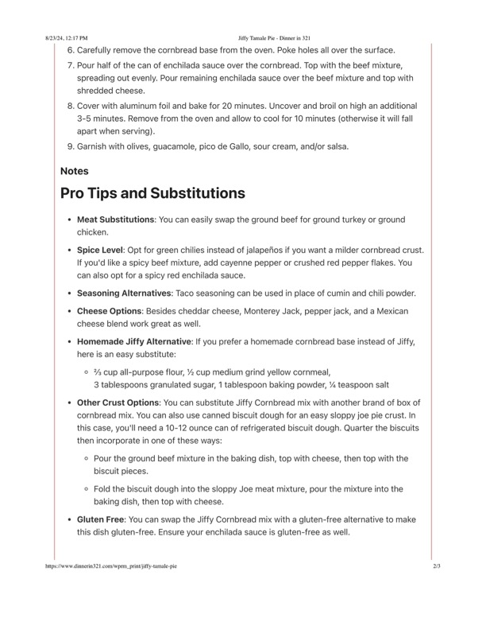

spreading out evenly. Pour remaining enchilada sauce over the beef mixtt

Original cookbook page 661
Ingredients
- 3 tablespoons granulated sugar, 1 tablespoon baking powder, % teaspoon salt
Instructions
- Carefully remove the cornbread base from the oven. Poke holes all over the surface.
- Pour half of the can of enchilada sauce over the cornbread. Top with the beef mixture, spreading out evenly. Pour remaining enchilada sauce over the beef mixture and top with shredded cheese.
- Cover with aluminum foil and bake for 20 minutes. Uncover and broil on high an additional 3-5 minutes. Remove from the oven and allow to cool for 10 minutes (otherwise it will fall apart when serving).
- Garnish with olives, guacamole, pico de Gallo, sour cream, and/or salsa.
Recipe #661 from collection